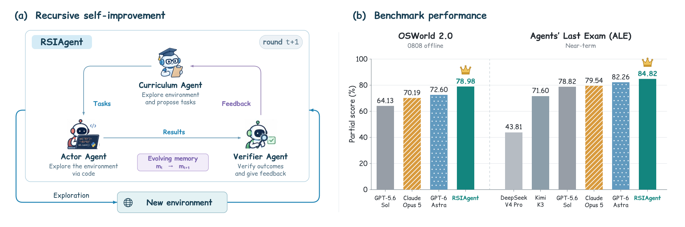
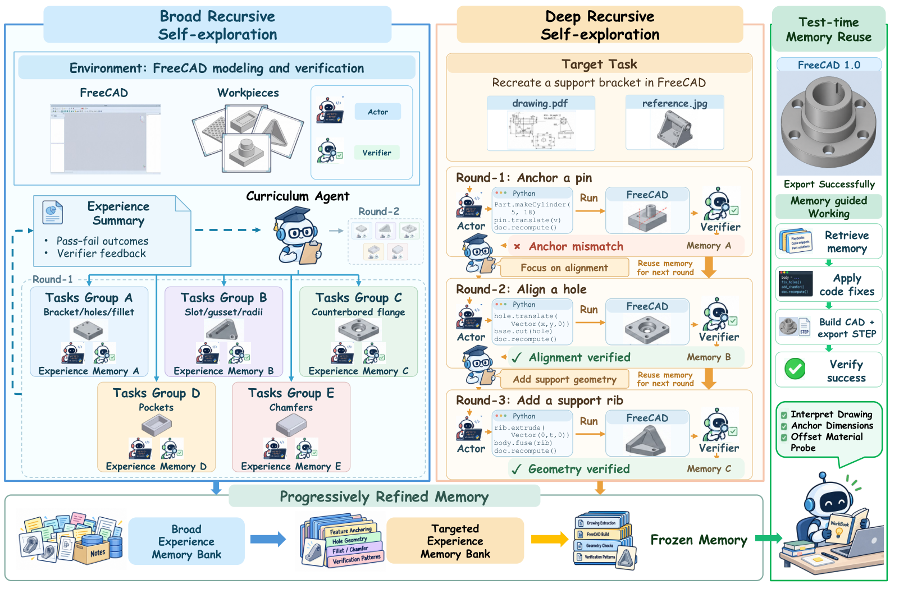

RSIAgent: Weight-Frozen Recursive Self-Improvement via Autonomous Exploration and Verified Memory (Aether AI / UCSD)
TL;DR
- RSIAgent (Zhu, Fan, Wang, Wu, Zhou, Huang — Aether AI / UC San Diego / UIC, arXiv 2609.15364) is a training-free recursive self-improvement harness for computer-use agents: a curriculum agent proposes practice tasks, an actor agent executes them as code, a verifier agent grades outcomes from environment evidence, and only verified experience is consolidated into a persistent memory. The memory is then frozen and reused at test time. No gold labels, no weight updates.
- Exploration is broad-then-deep: Broad Recursive Self-exploration (BRS) runs parallel practice projects to map the environment; Deep Recursive Self-exploration (DRS) runs a sequential ladder of harder tasks to surface hidden constraints and boundary conditions. The authors explicitly frame this as "pretraining-then-post-training" for memory.
- With GLM-5.3 as actor and Kimi-K3 as verifier + curriculum, the harness goes from 71.97 → 78.98 partial score on OSWorld 2.0 (82 offline tasks) and 83.75 → 84.82 on Agents' Last Exam Near-term, above the reported GPT-6 Astra numbers (72.60 / 82.26). A four-task ablation gives full RSI 74.54 vs BRS-only 65.52 vs DRS-only 56.50 — deep-only exploration can fall below the no-RSI baseline.
Why this matters
This reading list has been tracking a slow split in "self-improvement": methods that change the weights (RL, on-policy distillation) versus methods that change the harness — memory, skills, prompts, tools — around a frozen model. RSIAgent is the cleanest recent example of the second camp making a headline-grade claim: two open-weight models inside a practice-then-freeze harness post higher partial scores than the reported numbers for frontier closed models on two serious computer-use benchmarks.
Whether or not you buy the headline (see the critical take), three things are worth internalizing: exploration is framed as causal discovery (memory stores action → condition → outcome relations, not just successful trajectories); the verifier never sees the actor's reasoning or memory, to break correlated errors; and the paper ships an honest failure audit naming how memory-based self-improvement goes wrong.
The core idea
A digital agent at step \(t\) picks an executable action conditioned on the task \(q\), the within-task history \(h_t\), and a durable memory \(M\):
Here \(\pi_\theta\) is the frozen policy model, \(h_t=(o_0,a_1,\dots,o_{t-1})\) is the interaction history (reset per task), \(s_t\) the hidden environment state, \(o_t\) the observation, and \(M\) the memory that persists across tasks. Actions are programs (code-as-policy), which gives one interface for GUI apps, CAD tools, DAWs, browsers and so on.
The problem the paper poses is: with \(\theta\) fixed, spend an exploration budget in a new environment \(\mathcal{E}\) to build an \(M\) that maximizes downstream success. Written as an objective (my reconstruction — the paper states it in prose):
where \(\mathcal{Q}_{\mathcal{E}}\) is the environment's task distribution, which the curriculum agent has to approximate by generating practice tasks. The recursive update that builds \(M\) is (reconstructed):
with \(\tau_k\) the trajectory of practice task \(k\), \(f_k\) the environment feedback (execution results, interface state, artifacts), \(V\) the verifier and \(C\) the actor-side consolidation step that adds procedures and lessons, and revises or deletes outdated entries. The "recursion" is that \(M_{k+1}\) conditions both the next actor and the next curriculum decision.

Figure 1 from the paper: (a) the recursive curriculum–action–verification loop that evolves memory \(m_t \to m_{t+1}\) in a new environment with no gold labels; (b) OSWorld 2.0 (0808 offline) and Agents' Last Exam (Near-term) partial scores, with RSIAgent on open models above the reported closed-model numbers.
How it works
Three roles. The actor is the policy model with an evolvable memory holding environment knowledge, reusable scripts, and lessons; after each verifier judgment it consolidates the grounded experience. The verifier independently decides success/failure from environment evidence and returns feedback; it is isolated from the actor's reasoning and memory. The curriculum agent decides what to practice next — prerequisite skills, informative variants, failure-driven practice, stress tests — based on the current target, accumulated memory, and prior outcomes, and stops when new tasks are unlikely to add knowledge.
Stage 1, BRS. Each iteration the curriculum agent proposes multiple tasks across different directions; actors and verifiers run them in parallel; the curriculum agent reads the verified results, identifies gaps, and proposes the next wave. Configuration: a nominal budget of eight exploration projects, up to four concurrent, budget checked between waves.
Stage 2, DRS. A sequential loop: propose one challenging task likely to expose hidden constraints or weaknesses in the current memory; actor attempts it with memory; verifier grades; consolidate; propose a harder follow-up. A successful practice does not end the stage — the curriculum agent decides whether more practice is worthwhile.
Freeze and reuse. At test time the curriculum agent and memory updates are disabled. The actor uses the frozen procedures, constraints, and lessons; the verifier still runs an action–verification loop until it confirms all task requirements (the no-RSI baseline uses the same harness with empty memory, so the verifier loop is not the source of the RSI gain).
An important configuration detail, stated once in Section 4.1: both exploration stages use the target query as a reference for the curriculum agent. Exploration is not blind adaptation to an environment; it is practice in the neighborhood of the actual test task.
RSIAgent(env E, target task q, actor π, verifier V, curriculum U):
M ← ∅
# Stage 1: Broad Recursive Self-exploration (parallel, ~8 projects, ≤4 concurrent)
repeat until U says coverage saturated or budget spent:
tasks ← U.propose_many(q, M, past_outcomes) # diverse directions
for each task in parallel:
τ ← π.run(task, M) # code-as-policy actions
(v, f) ← V.judge(τ, env_feedback) # PASS/FAIL + grounded feedback
M ← π.consolidate(M, τ, v, f) # add/revise/delete entries
# Stage 2: Deep Recursive Self-exploration (sequential ladder)
repeat until U says no further practice is useful:
task ← U.propose_hard(q, M, past_outcomes) # hidden constraints, boundaries
τ ← π.run(task, M); (v, f) ← V.judge(τ, env_feedback)
M ← π.consolidate(M, τ, v, f)
freeze(M)
# Test time: memory reuse, no curriculum, no memory writes
loop:
τ ← π.run(q, M); (v, f) ← V.judge(τ, env_feedback)
if v == PASS: return artifact

Figure 2 from the paper: the FreeCAD walk-through. BRS explores task groups (brackets, holes, fillets, slots, chamfers) in parallel into a broad memory bank; DRS runs rounds like "anchor a pin → align a hole → add a support rib", each verified and folded into memory; the frozen memory then drives the target task.
Results
Main table (Table 1). OSWorld 2.0 (0808 offline, 82 tasks): the harness without RSI scores 71.97 partial / 37.80 binary; with RSI 78.98 / 42.68. Agents' Last Exam Near-term (67 tasks): 83.75 / 49.25 → 84.82 / 50.75. Reported comparators (copied from official reports): GPT-6 Astra 72.60 / — on OSWorld and 82.26 / 52.24 on ALE; Claude Opus 5 70.19 / 34.72 and 79.54 / 46.27; Kimi-K3 alone 58.30 on OSWorld and 71.60 on ALE. Note that GPT-6 Astra's binary ALE accuracy (52.24) is still above RSIAgent's (50.75); the win is on partial credit.
Per-task trajectories (Figure 3). On three OSWorld tasks — video editing (T044), presentation repair (T049), railway booking (T065) — scores climb over eight RSI steps to 100%, 80%, and 100%. The curves are step-like: memory accumulates quietly, then resolving one bottleneck flips a task.
Ablation (Figure 4, four tasks). Full RSI 74.54 mean vs BRS-only 65.52 vs DRS-only 56.50 vs baseline. Broad-only improves every task; deep-only from empty memory falls below baseline on the audio-editing and web-presentation tasks. Order matters: cover first, then dig.
Game development (Table 2, 40 GameCraft-Bench tasks). Against Play2Code (iterative playtest-and-revise), RSIAgent improves overall quality for every base generator, e.g. 52.77 → 61.28 for Codex + GPT-5.5 games and 30.55 → 48.72 for GLM-5.3-Flash games, while Play2Code can degrade already-strong games (52.77 → 51.05).
Failure audit (Section 4.6, Figure 5). Three mechanisms: insufficiently targeted exploration (target-skill mismatch in 3 of 4 audited cases), incomplete verification (fidelity gaps 3/6, grounding gaps 2/6, coverage gaps 1/6 — the verifier returned PASS despite unsupported field values), and unreliable memory consolidation (rule-scope loss 2/3, uncertainty not enforced 1/3 — e.g. a rule that treated missing-data markers as valid answers got reused).
How it connects
- harness-continual-learning / macaron-v1-continual-learning — continual adaptation outside the weights. RSIAgent is the strongest benchmark instantiation so far, but has no retention gate, so contagious bad memories (which its own audit documents) are unguarded.
- fragility-self-improving-agents — memory-based self-improvement amplifies run variance and spreads bad memories; RSIAgent's "Full RSI bars average two historical evaluations" is exactly where that paper's variance numbers belong.
- msce-memory-to-skills / evo-harness-skills / skill-library-google — the raw-experience → consolidated-procedure ladder, here with a verifier gate in front and "causal" action–condition–outcome entries.
- hyperagents / darwin-godel-machine — need benchmark scores or labels to drive self-modification; RSIAgent's pitch is a label-free loop grounded in a model verifier plus environment feedback.
- llm-as-a-verifier / rlsvr-self-verifiable-rewards — the verifier is load-bearing here, and the failure modes show calibrated, self-checkable verification is not optional.
Critical take
- This is target-aware practice, not blind environment adaptation. The curriculum agent is given the target query in both stages, and per Appendix C.3 exploration was directed at tasks "with remaining room for improvement" that were "not already covered by an RSI lineage." So the honest description is: an agent that gets to practice around each test task with a model verifier as proxy grader, versus closed models' single-shot numbers copied from their reports under different harnesses. That's a legitimate and interesting regime, but "open models outperform GPT-6" oversells it.
- The aggregate mixes RSI and non-RSI tasks. "For the tasks without a completed RSI result, we retain the baseline scores." The documented expansion cohort lists 17 newly explored tasks; how many of the 82 OSWorld tasks ultimately received RSI is not stated in the main text, so the per-task effect size is unknown and the +7 aggregate is a lower bound on what full coverage would do — or an upper bound if the covered tasks were cherry-picked as the most improvable. The ablation likewise assembles "recorded scores" from historical runs rather than a controlled re-run.
- "Without updating model parameters" hides two frontier open models and an unreported compute bill. GLM-5.3 acts, Kimi-K3 verifies and curates, and each target gets ~8 parallel projects plus a sequential deep ladder. The limitations section concedes "substantial computation cost" without quantifying it. The right comparison is cost-matched: give the closed model the same verifier loop and practice budget.
- The verifier is the weak link and the paper proves it. Half of audited verification failures were fidelity gaps where PASS was issued on wrong artifacts; those PASSes become rules. Nothing in the method enforces the "store conditions and uncertainty" advice the authors give, which is where a retention gate belongs.
- What survives skepticism: broad-before-deep is a real finding (deep-only can hurt), the role separation is sound, and the failure taxonomy is the most useful part for anyone building experience-scaling harnesses.
If you remember three things
- RSIAgent = curriculum → actor → verifier loop that builds a verified, frozen memory for a new environment with no labels and no weight updates; gains come in discrete per-task breakthroughs (71.97 → 78.98 OSWorld partial, 83.75 → 84.82 ALE).
- Broad then deep. Parallel coverage first, then a sequential ladder of hard cases; deep-only exploration from empty memory can score below no exploration at all.
- The headline comparison is target-aware practice vs. single-shot reports, with partial task coverage and an unreported compute budget — and the paper's own audit shows verifier PASS errors turning into reusable bad rules.